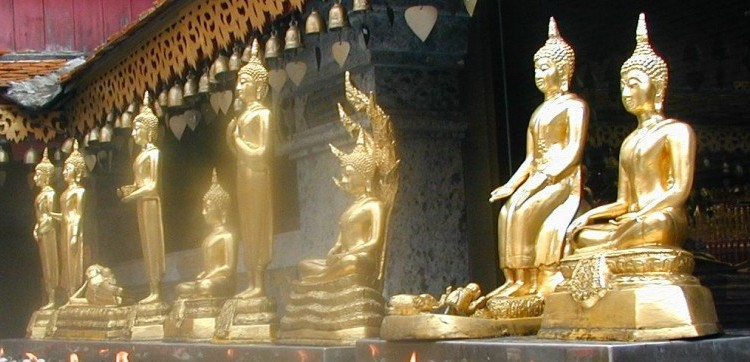

|
Ảnh Phật cho những người sinh vào ngày thứ 1 trong tuần |
Ảnh Phật cho những người sinh vào ngày thứ 2 trong tuần |
|
Ảnh Phật cho những người sinh vào ngày thứ 3 trong tuần |
Ảnh
Phật cho những người sinh vào ngày thứ 4 trong tuần |
 Ảnh
Phật cho những người sinh vào ngày thứ 4 trong tuần |
Ảnh Phật cho những người sinh vào ngày thứ 5 trong tuần |
|
Ảnh Phật cho những người sinh vào ngày thứ 6 trong tuần |
Ảnh Phật cho những người sinh vào ngày thứ 7 trong tuần |
Source: Post Cards by S. Dhumphakdi & Sons Publisher, Bangkok, Thailand

Source: Internet